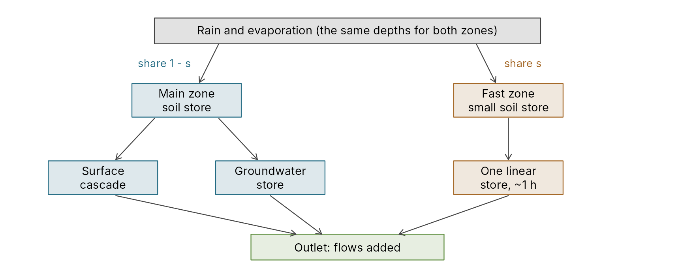
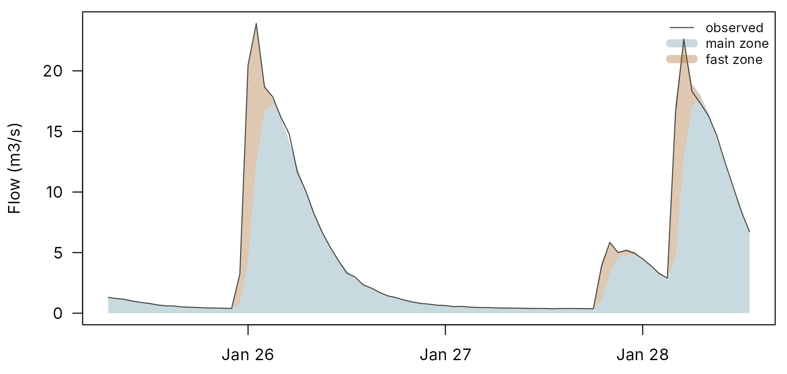
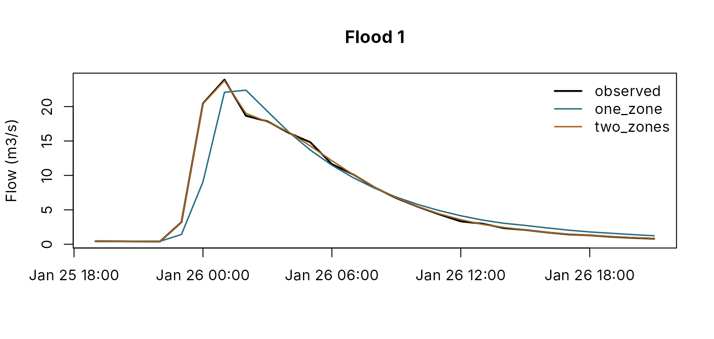

The two-zone PDM: a fast zone for flashy catchments
pdmS7 documentation
Source:vignettes/two-zone-pdm.Rmd
two-zone-pdm.RmdSome rivers answer rain twice. A sharp spike comes within an hour or two and is gone within a few more; a slower flood hydrograph follows and recedes over a day or two; baseflow carries on for weeks. The spike comes from ground that sheds water at once: roads and roofs, saturated ground by the channel, thin soils on steep slopes. The rest comes from the soils of the catchment at large.
One PDM has two routes to the outlet, a fast surface route and a slow groundwater route. Asked to make three timescales with two, a calibration bends one of them to do two jobs, and the parameters show it. This article describes the two-zone PDM in pdmS7, which adds a third timescale in the way the published model allows, and shows it at work on a made-up catchment whose truth is known.
The signs that one zone is not enough
On a real flashy catchment, a single-zone calibration tends to show three things together:
-
Parameters pinned at their limits. A split recharge
share
recharge.alphaat its lower bound (nearly all runoff sent to groundwater), with the groundwater store doing the flood routing; or surface stores at the slowest values allowed. The search is pressing against the fences in every fit, whatever the structure. - An events stage that wants something else. Fitted to the largest floods alone, the surface stores go very fast, an hour or less, and the overall fit falls apart, because the same stores must also carry the slow flood hydrograph.
- Peaks too low and too late on the largest floods, however the stores are set.
Fences and caps on one zone cannot fix this: it is a missing timescale, not a wrong value.
The model
The PDM for PCs configuration guide (section 5) allows several hydrological zones: complete PDMs over parts of the catchment, each with its own parameters, area and delay, whose flows add at the outlet. pdmS7’s two-zone PDM keeps the catchment’s usual PDM as the main zone and adds a small fast zone that does one job only: the spike.

The two-zone PDM. Both zones read the same rain and evaporation; their flows add at the outlet. The fast zone has no groundwater path.
The fast zone is a complete PDM, so every parameter has a value, but most are locked. Four are searched:
| Parameter | Starting value | Searched |
|---|---|---|
Share of the catchment area, zones.fast.share
|
0.1 | 0.01 to 0.3 |
Soil store: Pareto, cmax
|
20 mm (with b 0.5) |
cmax, 1 to 100 mm |
Recharge: split, alpha 1 |
all direct runoff to the surface, none to groundwater | no |
Surface: one linear store, kb
|
1 h | 0.25 to 12 h |
Groundwater: linear, kb 1000 h |
never fed | no |
Delay, td
|
0 h | 0 to 6 h |
Evaporation exponent be
|
the main zone’s | no |
The fast zone can only make quick runoff: its recharge sends nothing to groundwater. So it cannot trade baseflow with the main zone, and the two zones keep their roles. That is what makes the extra four parameters identifiable from a flow record: a second full PDM, with its own groundwater, would add seven and could swap water with the main zone without explaining anything new.
The rain adds up
Both zones read the same rain and evaporation depths, the catchment
average, in mm per step. A zone’s rain volume is that depth over its own
area, and the two areas add up to the catchment’s, so the rain volume
over the zones is exactly the catchment’s. The rainfall factor
fc is set once, for both zones: locked at 1 by default, and
if it is unlocked, it scales the rain on both zones together. Each
zone’s water balance closes on its own; the outlet flow is the sum of
the zones’ flows, and depth columns such as soil_mm and the
balance are area-weighted.
cfg <- pdm_presets("standard")
cfg$area_km2 <- 30
two <- two_zone_config(cfg, share = 0.12)
model <- pdm_from_config(two)
vapply(model@zones, function(z) c(area_km2 = z@area_km2, fc = z@fc), numeric(2))
#> main fast
#> area_km2 26.4 3.6
#> fc 1.0 1.0A made-up flashy catchment
The true catchment here is a two-zone PDM: 12 per cent of it sheds rain through a store of 0.6 hours; the rest is a standard PDM. Rain falls in bursts over eight months of hourly data, and the gauge adds 3 per cent noise.
set.seed(5)
n <- 24 * 240
time <- as.POSIXct("2020-10-01", tz = "UTC") + 3600 * (seq_len(n) - 1)
forcing <- data.frame(time = time, pet = 0.07,
rain = ifelse(stats::runif(n) < 0.07, stats::rexp(n, 0.25), 0))
truth <- two
truth$zones$fast$surface$kb <- 0.6
truth$zones$fast$distribution$cmax <- 8
truth_model <- pdm_from_config(truth)
start <- initial_state_from_flow(truth_model, 0.5, 0.7)
observed <- run_pdm(truth_model, forcing, start)$output$q_m3s * exp(stats::rnorm(n, 0, 0.03))The hydrograph of a storm shows the two zones’ parts: the fast zone’s spike on top of the main zone’s slower response.
zones <- lapply(names(truth_model@zones), function(z) {
run_pdm(truth_model@zones[[z]], forcing, start@states[[z]])$output$q_m3s
})
peak <- which.max(observed[seq_len(n / 2)])
shown <- (peak - 18):(peak + 60)
par(mar = c(2.5, 4.2, 0.6, 0.6))
plot(time[shown], observed[shown], type = "n", xlab = "", ylab = "Flow (m3/s)", las = 1,
ylim = c(0, max(observed[shown])))
polygon(c(time[shown], rev(time[shown])), c(zones[[1]][shown], rep(0, length(shown))),
col = adjustcolor(pal[["blue"]], 0.25), border = NA)
polygon(c(time[shown], rev(time[shown])), c(zones[[1]][shown] + zones[[2]][shown],
rev(zones[[1]][shown])),
col = adjustcolor(pal[["orange"]], 0.35), border = NA)
lines(time[shown], observed[shown], col = pal[["dark"]])
legend("topright", c("observed", "main zone", "fast zone"), bty = "n", cex = 0.8,
lwd = c(1, 8, 8), col = c(pal[["dark"]], adjustcolor(pal[["blue"]], 0.25),
adjustcolor(pal[["orange"]], 0.35)))
One storm in the made-up catchment: the observed flow, and the true model’s two zones, stacked.
One zone against two
Each structure is calibrated alike: every parameter in
calibration_bounds(), by DDS, on the first five months,
from a steady start at the first observed flow.
calibration <- seq_len(24 * 150)
fit_one <- function(config) {
b <- calibration_bounds(config)
calibrate_pdm(config, forcing[calibration, ], observed[calibration],
lower = stats::setNames(b$lower, b$path), upper = stats::setNames(b$upper, b$path),
log_scale = b$path[b$scale == "log"], warmup = 24 * 14, method = "dds",
starts = 2, seed = 1, control = list(maxit = 400))
}
one <- suppressWarnings(fit_one(cfg))
both <- suppressWarnings(fit_one(two))
round(both$parameters[grepl("fast", names(both$parameters))], 3)
#> zones.fast.share zones.fast.distribution.cmax
#> 0.120 10.453
#> zones.fast.surface.kb zones.fast.td
#> 0.544 0.045
cmp <- compare_calibrations(
list(one_zone = one$config, two_zones = both$config), forcing, observed,
windows = list(calibration = c("2020-10-15", "2021-02-27"),
validation = c("2021-02-28", "2021-05-28")),
markers = c("Q1", "Q5")
)
cmp$scores[cmp$scores$score %in% c("nse", "log_nse"), ]
#> window score one_zone two_zones
#> 1 calibration nse 0.9337016 0.9977580
#> 2 calibration log_nse 0.9722254 0.9985777
#> 15 validation nse 0.9240773 0.9976347
#> 16 validation log_nse 0.9685981 0.9985103The two-zone fit puts 12 per cent of the area in the fast zone, against a true 12, with a store of 0.54 hours against a true 0.6; its soil store, at 10 mm against a true 8, is the least certain of the four. On the validation months, which neither fit saw, its NSE is 0.998 against 0.924 for one zone, and its median peak error on the largest floods 2 per cent against 4.
plot(cmp)
The largest flood of the record: observed flow, the one-zone fit and the two-zone fit.
In a calibration project
calibrate_project() decides between one zone and two as
the last step of the structure recommendation, with
zones = c(1, 2):
calibrate_project(project, forcing, observed, area_km2 = 36.7,
calibration = c("2010-10-01", "2019-09-30"),
validation = c("2019-10-01", "2025-06-30"),
recommend = TRUE, zones = c(1, 2), report = TRUE)The recharge rule, soil store and groundwater store are chosen first,
as one zone. The last step then calibrates that structure as one zone
and with a fast zone added, and keeps two only if they score better on
the validation window by more than the tie tolerance (0.02 in NSE) and
no parameter is pinned at a bound; otherwise one zone stays. The choice
and its reason are written to the log, and the staged calibration then
runs on whichever won: the water balance of both zones first, then the
fast responses with the fast zone’s share and delay, then a polish over
everything, then the events stage. zones = 2 uses two zones
without the comparison; the default, zones = 1, keeps
one.
Bounds you give for the single-zone model carry over: an override or
exclusion without a zones. prefix, such as
surface.k1 = c(0.5, 12), applies to the main zone.
Reading the result
A two-zone calibration that has found a real spike looks like this:
- A small fast zone. A share of a few per cent to a fifth, and a store time constant of about an hour. A share pressed against 0.3, or a store of many hours, means the fast zone is doing the main zone’s work, and the second zone is not earning its place.
- The main zone freed. Its split recharge share and surface stores come off their limits, because it no longer has to make the spike.
- Better floods on validation, in peak size and timing, not only a better NSE.
If none of these holds, the extra zone is fitting noise, and one zone with judgement is the better model.
What it is not
- Not a map of the catchment. The fast zone’s share is fitted from the flow record, not measured from land cover. It may match the urban or near-channel area, and that is worth checking, but it is a calibrated parameter.
- Not for every catchment. On most rivers one PDM is enough, and the extra parameters cost identifiability. Let the structure step decide, and prefer one zone when it does not clearly win.
- Single-zone tools stay single-zone. Forecast updating, hindcasts, the events workbench in the app and PDM for PCs input files are for one zone. A two-zone candidate is simulated, calibrated, scored, compared and reported like any other.
References
Moore, R.J. (2007). The PDM rainfall-runoff model. Hydrology and Earth System Sciences, 11(1), 483-499. doi:10.5194/hess-11-483-2007.
UKCEH (2022). PDM for PCs, version 3.0.3: Configuration Guide, section 5 (multiple hydrological zones).